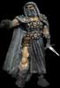

|
|
Les opérations secrètes sont très impotante en période d'incertitude. Plusieurs personnes sont devenues maitre dans l'art du camouflage et de la furtivité. Vous devez sélectionner une des deux grandes guildes, celle de l'espionnage, experte dans l'information et le sabotage, ou celle du vol, experte dans l'acquisition des biens ennemis. Ce choix vous permettra d'exceller dans les opérations de cette guilde. Les opérations de la guilde non sélectionné seront quand même disponible, mais seront beaucoup moins efficace. Vous ne pouvez faire partie que d'une seule guilde, exception faite aux hobbits qui ont accès aux deux, choisissez judicieusement.
La guilde doit recruter des membres afin d'effectuer les différentes missions. Lors d'une mission vous devez choisir le nombre de voleurs/espions que vous allez envoyer jusqu'à un maximum de 3 voleurs par acres. Leur nombre est un facteur déterminant dans leur chance de réussite. La seigneurie qui sera la cible d'une opération peut se défendre de deux façons. Le premier moyen efficace est la construction de tour de guet qui permettent directement d'empêcher le vol. La seconde façon est d'engager des voleurs/espions. Étant donné que ce sont des gens très renseignés, il leur est possible de détecter les voleurs/espions ennemis avant qu'il frappe.
Lors d'opérations, il est possible que certain de vos membres se fassent capturer. Dans certain cas ils vont vous dénoncer, cela permet à la seigneurie cible de connaître son assaillant. Dans d'autre cas il vous sont fidèle et ne vous dénonceront pas, votre opération reste donc anonyme. Si une seigneurie est fortement attaqué par des voleurs, elle portera une meilleure surveillance sur ses biens et rendera les opérations ennemi beaucoup plus dure à réussir.
Chaque seigneurie dispose d'un chef de guilde. Chacune des opérations effectuées par les membres de la guilde vont avoir une influence sur la réputation de leur chef. Les opérations réussies permettront au chef d'augmenter sa réputation. Les échecs vont la diminuer.
La réputation joue un rôle important lors de l'embauche de vos membres. Meilleur sera

la réputation du chef et moins les gens demanderons d'argent pour faire partie de votre guilde. Le niveau Terreur mondial par exemple, vous permet une réduction des coûts d'embauche de 50%. Si par contre votre réputation est plus basse que le niveau amateur, les gens demanderons plus d'argent pour faire partie de votre guilde.Un autre avantage de la réputation est la posibilité d'étendre la quantité de cible potentiel de votre seigneurie. Il sera mal vu de vos membres que vous vous attaquiez à un royaume trop petit, si vous tenter quand même la manoeuvre, votre chef perdra de sa réputation. Par contre si vous tenter votre chance contre une seigneurie plus grosse que vous, la grosseur de votre cible est déterminé par la réputation de votre chef. Le niveau amateur vous permet d'effectuer des opérations sur des provinces 70% plus grande que vous (exemple: vous avez 500 acres, donc 500 * 1.70 = 850 acres). Chaque niveau de réputation vient ajouter ou enlever 10% à cette valeur.
Note importante, lors d'une guerre aucune limite d'acre n'est imposée.
Voici les sept niveaux de réputation possible
Niveau Minable Incompétent Amateur Ordinaire Bien organisé Craint de tous Terreur mondiale Le niveau de départ est amateur.
La guilde des voleurs vous permet de faire des dommages à la seigneurie choisie, tout en vous apportant des ressources qui viendront aider votre économie et votre capacité militaire. Il est a noter que l'opérations de pyromane n'est pas disponible pour ceux qui ont choisi la guilde des espions et ne peuvent être effectuées seulement qu'en période de guerre par les membres de la guilde des voleurs.
Informations militaires Donne des renseignements sur les mouvements militaires ennemi Informations mage Donne des renseignements sur le mage ennemi Vol des coffres Vol de la ressource or Vol des silos Vol de la ressource nouriture Vol de la scierie Vol de la ressource bois Kidnapping Perte de paysan qui sont kidnappé Vol de trébuchet Parvient à voler des armes de siège de type trébuchet Vol d'onagre Parvient à voler des armes de siège de type onagre Vol d'objets magiques Diminue la capacité de faire de la magie pour le mage ennemi. Cela lui fait perdre de l'expérience tout en faisant augmenter les points d'expériences de votre mage. (Unique à cette guilde) Vol de chevaux Vol de l'unité cheval Pyromane* Détruit certains bâtiments de production. (Guerre seulement)
La guilde de l'espionnage est hautement spécialisé dans la destruction, le sabotage et l'information. Il est a noter que l'opération de sabotage n'est pas disponible pour ceux qui ont choisi la guilde des voleurs et ne peut être effectuée seulement qu'en période de guerre par les membres de la guilde des espions. Toutes les opérations d'information effectuées par les membres de cette guilde sont d'une précision supérieure au même opérations effectuées par les membres de la guilde des voleurs.
Informations militaires Donne des renseignements sur les mouvements militaires ennemi Informations mage Donne des renseignements sur le mage ennemi Vol des coffres Vol de la ressource or Information ville Donne la quantité de chacun des bâtiments ennemis Information conseillers Donne les caractéristiques des conseillers ennemis Rumeurs Donne des renseignements sur les nouvelles du royaume Information commandement Donne de l'information sur les généraux ennemis Rumeurs de guerre Donne de l'information sur l'état des objectifs de guerre. Attentat contre le mage* Fait perdre la concentration du mage Souillure* Détruit une importante quantité de nourriture Sabotage* Fait en sorte que les unités guerriers, archers ou sentinelles qui se font saboter leurs armes redeviennent de simple mendiant.(Guerre seulement)
Opération ne faisant partie d'aucune guilde particulière. Cette opération est disponible pour certaines races (voir guide races).
Embuscade* - Opération permettant de réduire les troupes parties à l'attaque lors de leur voyage de retour. Affecte les guerriers, archers, sentinelles ou élites qui sont sortis.
Si le chef de la guilde a une renommée craint de tous ou supérieur
- Capture des acres à partir des gains en acres de l'attaque. Si cela est fait en guerre les acres acquis seront réduit des acres à conquérir pour l'objectif de guerre. Cependant l'objectif de guerre sur les gains d'acre ne peut être gagné avec cette opération. Pour toute valeur de 50 acres et moins à conquérir les gains ne seront plus calculés.
- Vol d'or.
Note: De l'efficacité est retiré même si la cible n'a pas de troupe partie à l'attaque.
* Opérations offensives étant éligible lors du calcul de l'objectif de guerre sur les opérations de voleur et espion.